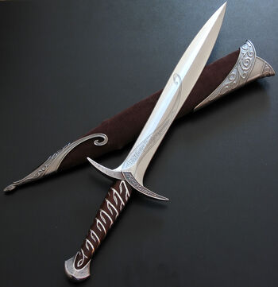
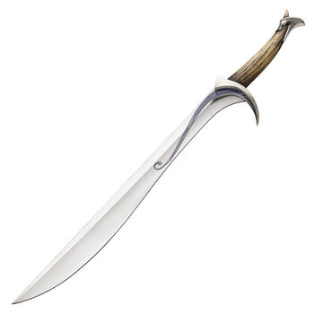
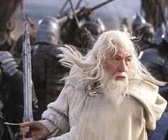
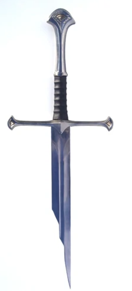
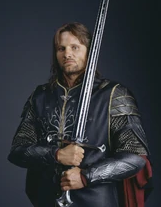

Weapons are tools and objects designed for hunting or combat. The most common types of weapons were bows, arrows, spears, pikes, and swords. Other weapons were axes, favored by the Dwarves and few Elves (such as Rog). Variations included maces, war hammers, iron-studded clubs, et cetera.
In the table below the most famous weapons in Middle-earth:
| Famous weapons | |||
| Name | Origin | Owner | Image |
| Sting | Gondolin | Bilbo/Frodo |  |
| Orcrist | Gondolin | Thorin Oakenshield |  |
| Glamdring | Gondolin | Gandalf |  |
| Narsil | Nogrod | Isildur | DESTROYED  |
| Anduril | Rivendell | Aragorn |  |
| Click to see more... | |||